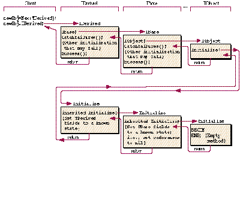
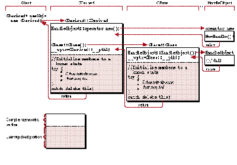

The ability to derive C++ objects from MacApp's PascalObject classes yields a
powerful marriage, but not without some misunderstandings between the two
languages. One potentially thorny area crops up in combining exception handling with
dynamic object construction for C++ objects. Judicious use of exception handling
techniques can simplify the development and maintenance of robust, well-structured
applications. But beware: it's easy to get stuck by the undesired interactions of C++
features and wind up in some tangled brush indeed.
Whereas the C++ language supports dynamic storage management implicitly through
object constructors and destructors, Object Pascal relies on user-defined conventions
such as those provided by TObject and adhered to explicitly by MacApp®. In addition,
MacApp defines conventions for exception handling during object initialization. Here
we explore techniques for incorporating MacApp-style exception handling in C++
objects and strategies for object construction, destruction, and dynamic storage
management that provide MacApp compatibility. The challenge is to retain the power of
C++ features while avoiding some potential pitfalls.
First we examine some basic differences in C++ and Object Pascal semantics and
provide an introduction to C++ objects. Then we review the object construction
mechanism used by MacApp and by C++, and present techniques for implementing
MacApp-compatible exception handling in C++. We also present techniques for using
C++ constructors and destructors with PascalObject- derived classes. Finally we
explore some special difficulties and workarounds for using C++ member objects in
handle-based classes.
Both C++ and Object Pascal rightfully claim to be "object-oriented" languages; yet, in
fact, there are some fundamental differences in expressiveness and meaning between
seemingly similar constructs in the two languages. These differences can be seen by
comparing the object creation process in the two languages:
{ Object Pascal: }
Var obj: TObj;
Begin
New(obj); { Allocate heap storage for a TObj instance }
End;
// C++:
TObj* obj = new TObj; // Allocate and construct a TObj instance on
// the heap
PASCAL NEW STATEMENT ALLOCATES STORAGE
The Pascal New statement allocates relocatable storage on the heap and places a
reference to the storage in the declared object reference variable. In the MacApp
environment, all Pascal objects are allocated as relocatable heap blocks using
NewHandle, so the reference is a Memory Manager handle. In the example above,
executing the Pascal New statement does not provide a fully constructed object
instance, but merely initializes the storage enough to give the object its class identity.
To become a true object instance, the storage must be initialized explicitly by the
programmer. By convention in MacApp, this is done by calling the method
I«Classname», where «Classname» is the class of the object
being instantiated--IObj, for example. Referring to object fields through the object
reference variable before this explicit initialization will probably yield garbage
results, greetings from Mr. Bus Error, or worse.
C++ NEW STATEMENT INSTANTIATES OBJECTS
In contrast, the C++ compiler gives a passing new statement much deeper
consideration. In general, a C++ compiler translates the new statement into a call to a
new operator followed by a call to a constructor for the class. The new operator is
similar to the New statement in Pascal: it's a function responsible for allocating
storage for the object instance. A constructor is a function responsible for changing
that raw storage into an instance of the class--a fully constructed object. Both
operator new and a default constructor are provided by the language system or
generated by the compiler and may be redefined, overloaded, and overridden for each
class by the user.
C TRANSLATED CODE
MPW C++ and other C++ systems based on the CFront translator instantiate objects
by generating a single call to the appropriate constructor. This constructor calls
operator new explicitly and, if the allocation is successful, constructs the object. For a
class with a trivial user-defined default constructor, the generated C code looks like
this (assuming the TObj class is derived from a HandleObject):
struct TObj** obj = __ct__4TObjFv( 0 ); // TObj* obj = new TObj;
The trivial constructor itself is spit out by the translator as
// Translation of definition TObj::TObj()
{ /* user code goes here */ }
struct TObj** __ct__4TObjFv(struct TObj** this) {
if (this || (this =
(struct TObj**)__nw__12HandleObjectSFUi
(sizeof(struct TObj)))) {
// A nontrivial constructor would have user code here
}
return this;
}
If you can squint past the mangled function names, you'll see that the new statement
has been translated as an explicit call to the default constructor for the class. The
constructor is named __ct__4TObjFv, which loosely unmangles as "a constructor
function for class TObj taking void (no) arguments." This default constructor (there
can be multiple overloaded constructors for a class) is called without user-supplied
arguments. That's how we declared it, but the translator snuck in another
argument--the this reference for the object being constructed. The constructor is
passed a nil this reference, indicating that no storage is allocated and the constructor
needs to do so by calling operator new.
Looking at the translation of the constructor itself, you'll see that the code tests the
this reference and, if it's nil, then calls the function __nw__12HandleObjectSFUi
(operator new function for class HandleObject taking an unsigned int argument). The
intrinsic HandleObject::operator new just calls NewHandle unless overridden. If
operator new returns a non-nil value, the constructor assumes it's a reference to
storage for the nascent object and executes its body of initialization code. We'll come
back to constructors and translations when we explore constructor implementation for
objects in a multilevel class hierarchy. A clear understanding of the object
instantiation process is needed to use exception handling with dynamic storage
management. For now, just notice that Pascal's New statement provides storage, while
C++'s new statement provides objects.
In MacApp, Pascal objects are allocated only as handles on the heap. In C++, however,
you can specify several ways for the compiler to get storage for an object:
For convenience we'll distinguish betweenheap-based objects that are only accessible
by pointers or handles and auto and static objects, which we'll callstack-based.
Regardless of where an object is allocated, a constructor is invoked to create the
instance. This is also true for temporary objects generated by the compiler under
certain circumstances (such as for function arguments and return values). A
constructor is always invoked when a new class object is created, no matter where or
how. This is one of the desirable properties that makes all C++ objects first-class
citizens regardless of storage class.
STATIC POTENTIAL
The low run-time overhead needed to allocate storage for stack-based objects makes
them light and suitable for implementations where heap-based objects would be too
inefficient. Further, many objects have limited enough scope to be allocated on the
stack. Thus the ability of C++ to create stack-based first-class objects is a powerful
feature that allows us to make our programs more intensively object-oriented than we
could with only heap-based objects.
For example, consider a dynamic list class like MacApp's TList. A TList is a Pascal
heap object that dynamically adjusts its size to store (typically) handles to other
Pascal heap objects. This is a good arrangement for relatively short lists of things like
windows, documents, and views. But what if you want a list of 50,000 objects that are
small in storage but complex enough operationally to be encapsulated as a class?
Such small but complex objects are common and include things like atoms, strings, and
lists themselves--the nuts and bolts of data structures. Each of these classes owns and
manages dynamic storage, yet instances of them rarely need to be allocated on the heap.
For example, a string class in C++ can be represented statically as a handle to storage
for characters; yet it can have many operators (concatenation, equality, assignment)
defined for it and a constructor and destructor that conspire to count references and
perform garbage collection on the handle. Just treating a string as a typedef synonym
for a handle would lose the encapsulation and notational convenience of the operator
family. A string that derived from a TObject (or other heap-based object) would still
be first-class, but doing something simple, like building a long TList of strings, could
get pretty inefficient.
A possible C++ solution would be to define a StaticList class that manages a single
handle to storage for a list of small static objects, such as strings. Having the list class
manage the allocation of objects in the list (which themselves manage handles to
storage) rather than allocating them as heap-based objects reduces the memory
management overhead for the list by more than half.
However, until the addition of language and compiler support for exception handling,
throwing exceptions from stack-based object constructors is basically a no-no,
because the compiler doesn't generate the needed destructor call. Stack-based objects
are useful anyway, even though their constructors can't throw exceptions; and it's
useful to throw exceptions from heap-based object constructors, as MacApp does for
its Pascal classes. We're going to take a closer look at how exceptions and construction
interact in a moment, but first let's consider member objects.
MEMBERS ONLY
In addition to the heap-based, auto, and static storage classes described above, C++
objects can also be allocated as members of an enclosing object. This is different from
the common practice of maintaining an object field with a reference (such as a handle)
to another heap-based object--an owned object allocated separately from the owning
object. Members take their storage from the storage of their enclosing object. Like all
C++ objects, members are first-class in that they can have constructors,
destructors, and all other class properties. Member objects are a powerful feature of
C++, but using them in a handle-based world and in the presence of exceptions
presents some special difficulties. We'll examine these difficulties later and for now
restrict the discussion to heap-based objectswithout member objects.
MacApp and C++ each provide a functionally similar scheme for object instantiation,
and it's important to understand these mechanisms in order to use exception handling
during object construction. During the instantiation process, object fields must be
initialized to a known state before any failures can occur. Then, if a failure does occur,
the exception handler can safely destroy the partially constructed object and free its
storage.
THE MACAPP WAY
After the Pascal New statement allocates uninitialized heap storage, an explicit
initialization step is required to instantiate an object in the allocated space. In the
MacApp environment, the root TObject class provides the canonical framework for this
initialization. Figure 1 illustrates this initialization process, showing the flow of
control during construction of a three-class Pascal object hierarchy.

Figure 1 Flow of Control During Pascal Object Instantiation
THE C++ WAY
C++ provides implicitly in its language semantics an instantiation scheme
functionally similar to MacApp's conventions. When the CFront translator generates
code for a derived class constructor, it automatically inserts calls to the base class
constructors before executing the user-supplied body. Figure 2 shows an overview of
the C++ object instantiation process.
There are several things to notice in Figure 2:
The user-defined body of each constructor initializes the fields belonging to that class
and performs other constructions, such as allocating owned objects. The narrowing of
type in constructors is important for exception handling, because if a constructor
signals a failure, we want to delete the partially constructed object using a virtual
destructor. Without narrowing, the virtual destructor call would resolve to the
most-derived class's destructor. This destructor would expect to operate on fields of
the derived object, which has not yet been constructed--Heap Check time! With
narrowing, the destructor invoked is of the same class as the constructor signaling the
failure, and only the constructed portions of the object are destroyed.
Since the constructors for each class in the hierarchy typically set fields to 0 in
order to initialize the object to a freeable state, sometimes it's more convenient and
efficient to initialize the entire block of storage to 0 when it's allocated. One way to do
this for native C++ objects is by redefining operator new. (See "ClearHandleObject
Approach for Native C++ Objects.")

Figure 2 Flow of Control During C++ Object Instantiation
EXCEPTIONS IN CONSTRUCTORS
To implement a simple but convenient MacApp-compatible failure handling mechanism
in C++, we use thetry and catch macros (see "Exception-Handling Macros"). In
general, if a constructor does anything that could throw an exception (say, due to
failure of an owned object allocation), it must take responsibility for catching all
exceptions and deleting its object on failure. If the constructor doesn't delete its object
on failure, no other code will have thethisreference to do so. This is also true for a
hierarchy of constructors--each base constructor must catch all exceptions it could
generate and delete its object on failure before throwing to the next handler. In a
typical case, each constructor/destructor pair might look like this:
CDerived::CDerived : CBase(...), fOwned(nil) (...)
{ // Reference is nil to start
try {
fOwned = new TOwned;
// Other stuff that could fail
}
catch delete this;
// If failure, destroy and throw to next handler
}
CDerived::~CDerived() {// Virtual destructor
if (fOwned) delete fOwned;
// Other cleanup
}
As C++ programmers, we'd like to use constructors and destructors with
PascalObject-derived classes to attain a uniform interface for clients. That is, in C++
programs we'd like to instantiate all objects, whether native or PascalObject-derived,
with anew statement and destroy all objects with adelete statement. In general, we
expect objects to follow language semantics, regardless of their storage class or
implementation, and we want to encapsulate the MacApp initialization scheme so that
our C++ clients don't have to know its details.
This seems straightforward, but there are several difficulties in using constructors
and destructors with C++ classes derived from PascalObjects. Though handle-based,
these classes use the Pascal method dispatcher and not the C++ virtual function table
mechanism. Thus, the native C++ narrowing isn't generated in constructors, making
method calls (such as Free) always virtual to the most-derived class--even if that
part of the object hasn't been constructed yet. Further, as of the E.T.O. #3 release
(C++ 3.1) there's a problem with how MPW C++ translates virtual destructors in
PascalObject hierarchies (see "Virtual Destructors and PascalObjects").
These considerations suggest some guidelines for those determined to make use of
object constructors and destructors to attain some consistency between native C++
objects and descendents of PascalObjects: * For C++ classes descended directly from
MacApp classes, define constructors CObj::CObj(...) as you would a MacApp IType
method. That is, the constructor should initialize fields of the object to a known state
and then call inherited::IType before performing any additional construction that could
fail-- for example, before allocating owned objects. * For C++ classes descended
indirectly from MacApp classes, the compiler invokes the base class constructors
(which can fail) before the constructor body can execute to set up a handler.
Therefore, in order for your Free method to operate correctly, you must define a
virtual pascal function Initialize to initialize fields to a known state. MacApp calls this
method before doing anything that could fail. Your constructor can simply call
inherited::IType before performing any initialization that could fail. * If you call any
other virtual member functions in your constructors, make sure that the fields they
depend on are initialized by your Initialize method. Virtual function calls in
PascalObject hierarchies are always instantiated as their most- derived definitions,
even before derived constructors are executed to construct the derived parts. *
Constructors should perform operations that could fail within the scope of an
exception-handling try block. The catch block should, if it can't recover from the
exception, perform any special cleanup and then delete the partially constructed object
by executing the statement delete this.
For destruction, we need a workaround because the native virtual destructor
mechanism is inoperative in PascalObject hierarchies. We would like thedelete
statement to invoke the Free method chain, which functions as the canonical Pascal
virtual destructor (TObject::Free deletes the storage). Here's one possible solution
that may require minor revision with future releases of MacApp:
void PascalObject::operator delete(void** h) {
((TObject*)h->Free(); // Invoke canonical virtual
// destructor chain
}
Future versions of MacApp may rely on operator delete to actually dispose of
the object's storage; if this becomes the case, you can modify TObject::Free or
TObject::ShallowFree to do the right thing.
If you're using member objects with destructors in PascalObject hierarchies, there
are other problems, as discussed in the next section.
So far we've been discussing classes that do not contain member objects. This covers
all standard MacApp classes, provided your derivatives don't add members. To take
advantage of first-class member objects, which are a powerful feature of C++, we
must face some difficulties. There are problems using member objects with
handle-based classes (both HandleObjects and PascalObjects) and problems with
exceptions in member constructors (common to static/auto objects as well). There are
further complications with PascalObjects due to the lack of virtual destructors.
Nevertheless, on balance we think member objects represent a powerful enough
construct to justify exploring these problems and possible workarounds--if we can't
have the compiler support that's really needed. The following sections offer techniques
for overcoming problems encountered with member objects in regard to handle-based
classes and exception handling.
Declare a wrapper class for member objects in handle-based
classes.Consider this translation of a constructor for a handle-based class that has a
member object with a constructor:
struct foo : public PascalObject { foo(); Memb a;
/* a member object */ };
foo::foo() {} // Default constructor
// Translation of foo::foo()
struct foo** __ct__3fooFv(struct foo** this) {
if (this ||
(this = (struct foo**)__nw__12PascalObjectSFPFv_vUi
(_foo, sizeof(struct foo)))) {
__ct__4MembFv(& (*this)-> a) ;
// Compiler-generated call of member constructor!
}
return this;
}
See the problem? It's the this reference passed to the member object's constructor
behind our backs by the compiler--it's a dereferenced handle! If the member
constructor does anything interesting (like allocate memory) it could move the
enclosing object, leaving the code with a dreaded dangling pointer. This is true for
all nonstatic member functions of member objects (not just constructors). Danger,
Will Robinson!
A general workaround involves locking the enclosing object's handle before calling
member functions that can move memory--the question is who should do the locking.
If you have a library of classes you'd like to use as members in handle-based objects,
you may want to create wrapper declarations for these classes and pass the handle to be
locked (the this reference of the enclosing object). Here's an example of a wrapper
for use by TObjects (which have a Lock method built in). It looks like a lot of code, but
it's all declarations. The run-time overhead is negligible--a trade-off between using
HLock/HUnlock to make the member safe and having a separately allocated heap object.
class CObj {
// Some library class we want to use as a member in handle-based
// objects
public:
CObj(...); // Constructor, could move memory
virtual int Accessor() { return field; } // Won’t move memory
virtual void Funky(...); // Could move memory
private: int field;
};
// A utility class with a constructor that locks handles
class Lockit { // Lock the enclosing handle in constructor chain
// before member constructor is called
public:
Lockit(TObject* h) { h->Lock(true); }
// Lock the handle
// This unfortunately defines a 1-byte structure rather than
// zero-length
};
// A wrapper for the above functional class CObj——reexport via
// private base class. Also inherit from Lockit so that its
// constructor is called before CObj::CObj(). Member functions
// and locking wrappers must be inline or in a resident segment.
// Otherwise, calling these functions can trigger a segment load
// and heap scramble before we can lock the enclosing object.
class MObj : private Lockit, private CObj {
// Wrapper for using CObjs in handle-based classes
public:
// Provide handle-locking wrappers for functions that can move memory
MObj(TObject* h,...);
// MObj(HandleObject* h,...);
// Could overload all to work with HandleObjects too
virtual void Funky(TObject* h,...);
// Now we'd like to use the access declaration syntax to republicize
// functions that don't move memory, but unfortunately CFront
// currently miscalculates the 'this' reference! To
// get 'this' right, we have to provide an explicit inline call,
// which is messy in this declaration but doesn't add any run-time
// overhead.
// CObj::Accessor;
// Doesn't work, miscalculates 'this'!
// Workaround:
virtual int Accessor() { return CObj::Accessor(); }
// Inline call wrapper so 'this' is right
};
// Wrapper function for constructor--lock enclosing handle first
inline MObj::MObj(TObject* h,...) : Lockit(h), CObj(...) {
h->Lock(false);
// Unlock enclosing handle now that we've finished with base
// constructors
}
inline void MObj::Funky(TObject* h,...) {
// Some memory-moving member function to wrap
Boolean state = h->Lock(true);
// Lock the handle--preserve its previous state
CObj::Funky(...); // Call original function
h->Lock(state); // Put handle back the way it was
}
// Clients can use CObj as a wrapped member like this:
class TFoo : public TObject {
MObj fMember; // Include the wrapped member
public:
TFoo(...) : fMember(this,...), ... { ... }
// Be sure to pass 'this' to member
// constructor
virtual void Func() { fMember.Funky(this,...); }
// Pass 'this' to member functions for
// HLocking
};
Notice that this wrapper scheme has some drawbacks--for example, the requirement
of explicitly passing a this reference as an additional argument. This won't work for
functions such as operator functions that have a fixed number of arguments.
Similarly, there's no way to pass an explicit argument to a destructor. In these cases,
you can get by if you don't refer to any member object fields within member object
functions after doing anything that can move memory. For example:
CObj::~CObj() {
// Destructor for above example library class that's used
// as a member in handle-based objects
// Can use our fields here; our 'this' reference is a
// dereferenced handle!
delete fOwned;
// Dispose of some storage we were managing--could compact heap?
// Better not reference any fields here! Our 'this' reference
// could now be a dangling pointer!
If you can't guarantee not referencing member fields after doing anything that can
move memory, then you'll have to explicitly lock and unlock your enclosing objects
before calling member object functions.
Don't throw exceptions from member/auto object constructors. Because
the compiler invokes member object constructorsbefore the body of the calling
constructor can execute to set up an exception handler, it's a bad idea to throw
exceptions from member and auto object constructors. If the member constructor
throws an exception, it's caught outside the scope of the calling constructor. The object
is only partially constructed, but fully allocated, and no code has the this reference to
delete the storage.
Therefore, member objects shouldnot throw exceptions from their constructors. For
similar reasons, it's inadvisable to throw exceptions from constructors for classes
used as auto objects. The exceptions are caught by a calling function in a higher stack
frame, and other autos in the original frame aren't destroyed correctly.
Explicitly test successful initialization of members/auto objects. To
deal with member and auto objects with constructors that may fail, and to avoid
memory leaks and worse, we really need language and compiler support for exception
handling. Such support has been proposed for a while, but it may be a long time
coming. In the interim, we'll fill in with conventions and guidelines for member and
auto objects that manage storage and perform other operations in their constructors
that may not succeed.
Possible conventions include explicitly initializing instead of using constructors
(which we've been trying to avoid) or explicitly testing for successful initialization
(which we prefer). A nice way to test explicitly is to define operator! as a test for
failure. This convention follows the C notion of using ! totest for a nil pointer
indicating an allocation failure. For example, consider a constructor for a class that
has a member object:
TObj::TObj() : memb(this,...) {
// Initialize members with member initialization syntax
try {
if (!memb) Failure(err,msg); // Test explicitly for member
// initialization failure
// Do other construction that could fail
}
catch delete this; // Destroy object if failure occurs
}
Here’s code for the member class constructor and operator! :
TMemb::TMemb(...) {
fOwned=nil;
try fOwned=new TOwned;// Don't throw exceptions if failure occurs
catch break; // Just exit from handler chain--i.e.,
// recover
}
TMemb::operator!() {
return fOwned==nil ||
(other init failure);
// Return *true* if initialization failed
}
Call destructors explicitly for auto objects in exception handlers. A final
convention for using auto objects allocated within code blocks that can generate
exceptions (either themselves, or by calling things that can fail) is to explicitly
destroy these autos in your exception handler. This can be done by calling the
destructor function directly using the static call syntax obj.TObj::~TObj( ).
Normally, the compiler knows to destroy autos when they go out of scope.
Unfortunately, the compiler doesn't yet know about exceptions and stack unwinding, so
it doesn't know that a call to Failure is blasting us out of scope. This can cause memory
leaks and worse, so always be careful with auto objects that manage storage in the
presence of exceptions. In particular, don't declare autos that require destruction
within the scope of a try block. For example:
MapFile(TFile* aFile) {
String s(10000); // Construct a 10K dynamic string on the heap
// Be sure to catch all exceptions now so we can free our autos
try {
// Don't declare autos needing destruction within this block!
FailInit(!s); // Throw memFullErr if initialization failed
aFile->ReadIntoString(s); // Do our work--could fail
}
catch s.String::~String();
// Destroy auto explicitly and throw to next handler frame
}
Be aware of implications of no PascalObject virtual destructors for
members. Previously we recommended using operator delete to invoke Free instead
of defining destructors in PascalObject hierarchies. But, if you include member
objects with destructors in your classes, the compiler generates calls to these
destructorsbefore Free is invoked. That is,all member objects in the hierarchy are
destroyed before any of their enclosing objects are destroyed. This is not a problem as
long as your Free methods don't try to access the member objects. Finally, because
there's no declared virtual destructor, the delete statement won't operate
polymorphically with respect to the members. Be sure to delete the derived class and
not a base class.
Finally, here's some sample code that illustrates all the techniques mentioned above:
// A fictitious example illustrating the techniques described above
// Let's declare this mess once and for all
typedef pascal void (*DoToField)(StringPtr fieldName, Ptr fieldAddr,
short fieldType void *DoToField_StaticLink);
class Lockit; // Declared earlier in article
inline void FailInit(Boolean t) { t? Failure(memFullErr,0) : ; }
class TMyEvtHandler : public TEvtHandler {
// Derived directly from a MacApp class
public: // Constructors and destructors
TMyEvtHandler(TMyCommand* aCmd=nil,TMyDocument* aDoc=nil);
// ~TMyEvtHandler(); // No C++ virtual destructors for
// PascalObjects yet!
// Override operator delete instead
virtual pascal void Free(void);
// Canonical Pascal virtual destructor
// Other methods
#if qInspector
virtual pascal void Fields(DoToField,
void* DoToField_StaticLink);
#endif
virtual pascal Boolean DoIdle(IdlePhase idlePhase);
// ...
private:
TMyDocument* fDocument;
// References to objects owned by someone else
TMyCommand* fCommand;
TMyOwned* fOwned;
// Reference to an object we own
MStaticList fStringList;
// A wrapped member object--must take special care
// in its destructor to not access fields after
// moving memory
};
class TMySpecialEvtHandler : public TMyEvtHandler {
// Derived indirectly from a MacApp class
public: // Constructors and destructors
TMySpecialEvtHandler();
// Default constructor
virtual pascal void Initialize(void);
// Pascal-style constructor
// No C++ destructor
virtual pascal void Free(void);
// Pascal-style virtual destructor
// Other methods
};
// Use member initialization syntax to pass arguments to our member
// object constructors
TMyEvtHandler::TMyEvtHandler(TMyCommand* itsCmd,
TMyDocument* itsDocument) :
fStringList(this,sizeof(String),
String::CopyConstructor,String::~String) {
// Initialize fields to a known state
fDocument = itsDocument;
fCommand = itsCmd;
fMyOwned = nil;
// So we won't try to delete it until we allocate it!
// Call IType chain to init MacApp classes
IEvtHandler(nil);
// Initialize inherited MacApp classes
try {
// Do rest of initialization in the context of a failure
// handler Make sure our member objects initialized
// themselves OK
FailInit(!fStringList);
// Make sure MStaticList member was initialized OK
// Do the rest of our construction (e.g., allocate owned
// objects)
FailNIL(fMyOwned = new TMyOwned); // . . .
// Do anything else that could perhaps fail
gApplication->InstallCohandler(this,true);
// Install ourselves in the idle chain
}
catch delete this;
// Oops, something failed, so just Free ourselves
}
pascal void TMyEvtHandler::Free(void) {
gApplication->InstallCohandler(this,false);
// Get us out of the idle chain
DeleteIfNotNil(fMyOwned);
// Delete our owned objects if they were allocated
try fDocument->Notify();
// Try something that could fail Just recover--destructors
// can't throw exceptions!!
inherited::Free();
// Tell bases to destroy themselves
// TObject::Free will delete the storage
}
// Use base initialization syntax
TMySpecialEvtHandler::TMySpecialEvtHandler() :
// Derived indirectly from a MacApp class
TMyEvtHandler(gSomeCommand,gSomeDoc) {
// By the time we get here, all base and member constructor
// and IType chains have executed
// without failure
try {
// Initialization that could fail
}
catch delete this;
};
pascal void TMySpecialEvtHandler::Initialize(void) {
inherited::Initialize();
// Initialize inherited fields to a known state
// Initialize our fields to a known state here!
}
pascal void TMySpecialEvtHandler::Free(void) {
// Delete owned objects and perform other cleanup here
inherited::Free();
// Let base classes destroy themselves
}
Here's a summary of the various techniques we've discussed for successfully using
C++ objects in a world of exceptions:
As an evolutionary outgrowth of the C language, C++ adds the basic features needed to
support object-oriented programming and, to a limited extent, user-defined language
extensions. Coupled with a powerful class library such as that supplied by MacApp,
C++ is a sensible platform for serious development where reliability,
maintainability, reusability, and efficiency are primary considerations. However,
it's also important to consider that C++ is essentially an immature language subject to
future growth and mutation. Because C++ was not specifically designed for the
Macintosh environment, the integration of language features is not yet seamless, as
we've seen.
With the advent of object-oriented programming and higher-level languages like C++
comes the desire of applications programmers to work at as abstract a level as
possible, insulated from the often arbitrary details of a particular platform's memory
architecture, operating system, or toolbox. With C++ you have the freedom to work
closer to the design level, but not without first making an investment in understanding
the depths of the language implementation. That is, we think it isalways important to
know what the compiler is doing behind your back. The return on this initial time
investment comes in applications that are better designed, more reliable, and easier to
upgrade and migrate. This article was written in hopes of reducing some of the pain in
this initial time investment, so that you can concentrate on the more enjoyable and
productive aspects of developing in C++.
Here's a simple technique that redefines operator new for HandleObject to call
NewHandleClear, so that on entry to derived constructors, all object fields are
initialized to 0 (references to nil, flags to false). This saves you the trouble of
explicitly initializing these fields to 0 with constructor code before doing anything
that could fail.
class ClearHandleObject : public HandleObject {
// Provides HandleObjects preinitialized to zero
public:
void** operator new(size_t theSize)
{ return NewHandleClear(theSize); }
// Could declare some other useful handle-oriented functions
// here (or in a superclass)
// Boolean Lock(Boolean);
// Lock/unlock object and return previous
// state, like TObject
// void MoveHigh();
// Move object handle out of the way to top
// of heap etc.
};
Here we present a derivative of Andy Shebanow and Andy Heninger's excellent
UFailure-compatible exception handling scheme for C and C++ that was distributed
with Sample Code #14, CPlusTESample, on the Developer Essentials disc. The basic
scheme is the same, but we've tweaked the macros so that they follow C block
structuring conventions more closely. This produces code that's easier to read and
more compatible in form with proposed C++ language extensions for exception
handling. Now we can write:
try {
// stuff that might throw an exception
}
catch {
// do stuff to recover
break; // Exit handler, recovered
}
This establishes a failure handler within the scope of the try {} block. If any code
within this block generates an exception (by calling Failure) the exception will be
caught by the code in the catch {} block. Since we're following C structuring
conventions, for simple statements you can omit the { }.
Normally, falling through the end of the catch block will throw the exception to the
next handler in the chain by calling Failure again. If you want to recover from the
exception, you can execute an explicit goto out of the catch or simply execute a break
statement. For example,
try CouldFail(); catch break;
would recover from all exceptions in CouldFail without further checking. Also, you can
do a break in a tryblock that just exits the try. The catch block is executed only if
something in the try block throws an exception.
The following caveats apply:
MPW C does a good job of optimizing out the loops, making the generated code
comparable to the previous versions.
Here are the macro definitions to replace the previous version:
#define try \
jmp_buf errorBuf; \
if (! setjmp(errorBuf) ) { \
FailInfo fi; \
CatchFailures(&fi, StandardHandler, errorBuf); \
do {
#define catch \
} while (0); \
Success(&fi); \
} \
else \
for(; (1); Failure(gFailError, gFailMessage))
MPW C++ 3.1 uses a Pascal method dispatch instead of a static call for the base class
destructor calls it generates at the end of a derived destructor that is declared virtual
in a PascalObject-derived class. The Pascal method dispatch resolves (virtually) to
the most-derived class's destructor, which is the caller--in other words, death by
infinite recursion. Oops.Without virtual destructors, the delete statement won't
operate polymorphically. In other words, you can get bitten by this:
funfun() { // TBase has a nonvirtual
// destructor
TBase* anObj = new TDerived; // Create a new TDerived
delete anObj; // But delete a TBase! Ugh!
delete (TDerived*) anObj; // This works correctly but what
// a pain--error prone, too
}
Until the C++ compiler is updated, you should adopt the convention of using the Free
method as the virtual destructor chain, and redefine PascalObject::operator delete to
invoke it.
MICHAEL GREENSPON is the principal noisemaker for Integral Information
Systems, a Berkeley, California software engineering and consulting group
(AppleLink: Integral). When he's not breaking compilers by trying to use all of their
features at once, he's busy designing next-generation solutions for clients. His
interest in the evolution of information systems goes beyond silicon--as a
neurobiology undergrad at Cal Berkeley he developed visualization tools for neural
network dynamic modeling using a Macintosh workstation linked to the school's Cray
supercomputer. "People think the brain's a computer, but it's really an aquarium."
(Ask him about his lava lamp representation of the mind.) A native Californian, he
says he "prefers UV to ELF, any day." In fact, when the sun's out you're likely to find
him swimming, mountain biking in Wildcat Canyon, or backpacking in the High Sierra.
In between, he's working to promote telecommuting, car-free days, and CRT-free
spaces.*
Reading the intermediate C code can save you a lot of MacsBug time. The C code
can be dumped into a file by using the -c option on the compilation command line and
redirecting the output with > file (for example, cplus foo.cp - c - l0 > foo.c).
Including the -l0 (el zero) option prevents the generation of #line directives. *
For an example of a garbage-collecting string class see "The Power of C++," by
Waldemar Horwat, MacHack Conference Proceedings, 1990. *
For more information on object initialization in MacApp see the MacApp 2.0
Cookbook, Beta Draft , APDA #M0299LL/C, Chapters 1 and 7. *
For more information on object initialization in C++ see The Annotated C++
Reference Manual , by Margaret A. Ellis and Bjarne Stroustrup, Addison-Wesley,
1990, §12.6.2 (on base/member initialization syntax) and §10.9c (on
virtual function instantiation). *
For more information on proposed C++ exception handling see The Annotated C++
Reference Manual , by Ellis andStroustrup, §15. *
For more information on member access declaration syntax seeThe Annotated C++
Reference Manual , by Ellis and Stroustrup, §11.3. *
Thanks to Our Technical Reviewers Dave Radcliffe, Larry Rosenstein, Kent
Sandvik, Brad Silen *